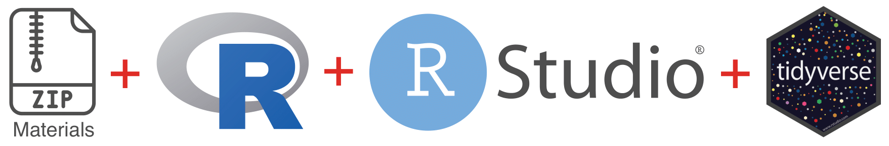
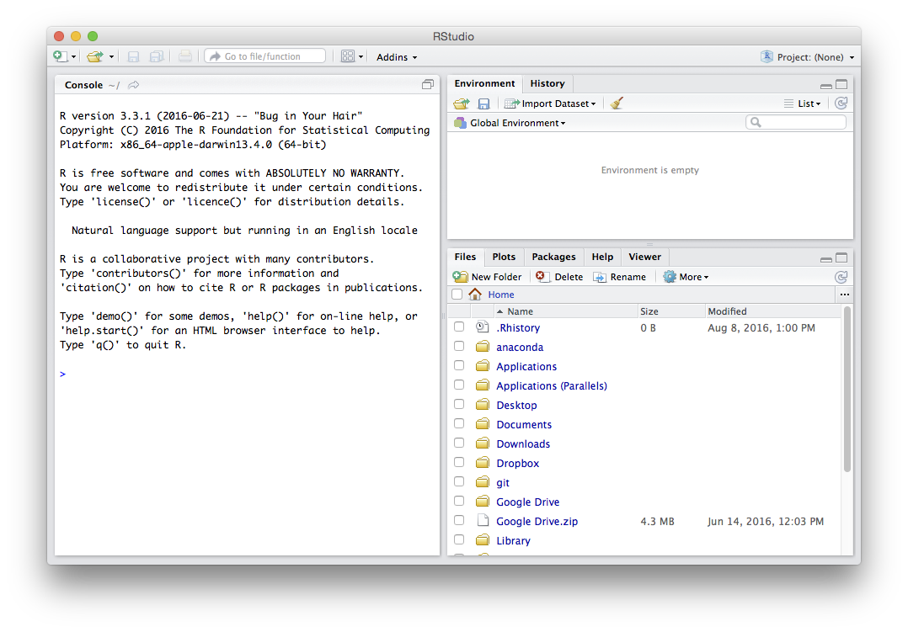
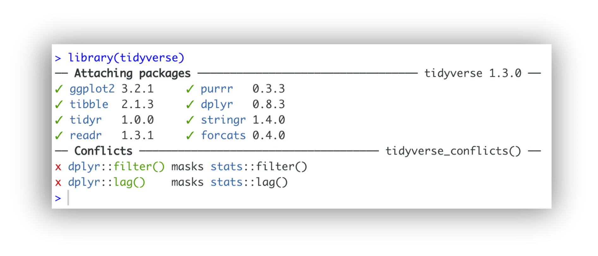

R Installation
Your professional conduct is greatly appreciated. Out of respect to your fellow workshop attendees and instructors, please arrive at your workshop on time, having pre-installed all necessary software and materials. This will likely take 15-20 minutes.
Before starting any of our R workshops, it is necessary to complete 4 tasks. Please make sure all these tasks are completed before you attend your workshop, as, depending on your internet speed, they may take a long time.
- download and unzip class materials
- download and install R
- download and install Positron
- install the
tidyversesuite of R packages

Troubleshooting session
We will hold a troubleshooting session to help with setup during the 20 minutes prior to the start of the workshop. If you are unable to complete all four tasks by yourself, please join us at the workshop location for this session. Once the workshop starts we will NOT be able to give you one-to-one assistance with troubleshooting installation problems. Likewise, if you arrive late, please do NOT expect one-to-one assistance for anything covered at the beginning of the workshop.
Materials
Download class materials for your workshop:
- R Introduction: https://github.com/IQSS/dss-workshops/releases/latest/download/materials-r-intro.zip
- R Regression Models: https://github.com/IQSS/dss-workshops/releases/latest/download/materials-r-models.zip
- R Graphics: https://github.com/IQSS/dss-workshops/releases/latest/download/materials-r-graphics.zip
- R Data Wrangling: https://github.com/IQSS/dss-workshops/releases/latest/download/materials-r-wrangling.zip
Extract materials from the zipped directory (Right-click -> Extract All on Windows, double-click on Mac) and move them to your desktop.
It will be useful when you view the above materials for you to see the different file extensions on your computer. Here are instructions for enabling this:
Software
You must install both R and Positron, the IDE we use for R and for Python alike (if you already use RStudio and prefer it, everything in these workshops works there too); it is essential that you have these pre-installed so that we can start the workshop on time. It is also important that you have the latest versions of each software, which currently are:
- R version 4.6.1
- Positron version 2026.07.1
macOS:
- Install R by downloading and running the .pkg file for your Mac (Apple silicon or Intel) from CRAN.
- Install Positron by downloading and running the macOS installer from positron.posit.co.
Windows:
- Install R by downloading and running the .exe installer from CRAN.
- Install Positron by downloading and running the Windows installer from positron.posit.co.
Linux:
- Install R by downloading the binary files for your distribution from CRAN. Or you can use your package manager (e.g., for Debian/Ubuntu run
sudo apt-get install r-baseand for Fedora runsudo yum install R). - Install Positron for your distribution.
Success? After both installations, please launch Positron. It finds your R installation by itself; if all went well you should see a window similar to this, with an R console at the bottom (the R version reported may be newer):

If you are having any difficulties with the installations or your Positron window does not look like this one, please stop by the training room 20 minutes prior to the start of the workshop.
Installing the tidyverse
We will use the tidyverse suite of packages throughout these R workshops. Here are the steps for installation:
Launch an R session within Positron
On Windows, click the start button and search for Positron then click on it. On Mac, Positron will be in your Applications folder — double click on it. The Console at the bottom of the window is an R session.
Install
tidyverseIn the Console pane at the bottom of the window, at the command prompt (
>) type the following and press enter:install.packages("tidyverse")If a choice appears that says something like:
Do you want to install from sources the package which needs compilation?type
Noin the console.If you are running Windows OS, you may see a message that says:
WARNING: Rtools is required to build R packages, but is not currently installed.You can safely ignore this warning.
A number of messages will scroll by, and there will be a long minute or two pause where nothing appears to happen (but the installation is actually occurring). At last, the output parade should end with a message like:
The downloaded source/binary packages are in....Check that installation was successful
We can check that
tidyversehas installed correctly by connecting it to our current R session. Type the following in the console at the command prompt (>) and press enter:library(tidyverse)Success? If so, you should see the following message in the console (note that the version numbers reported may be newer):

If you do not see this message and encounter an error — try troubleshooting this in the next section.
Troubleshooting tidyverse installation
Sometimes, you may run into problems installing the tidyverse suite of packages. Here are some commonly encountered errors and suggestions for how to fix them:
tidyverseis not available for R version…- Solution: make sure you have the latest versions of both R (4.6.1) and Positron (2026.07.1).
- there is no package
rlang…- Solution: run this command in the console at the command prompt (
>): install.packages("dplyr")- If a choice appears that says something like
Do you want to install from sources the package which needs compilation?, typeNoin the console.
- Solution: run this command in the console at the command prompt (
- there is no package
broom…- Solution: run these commands in the console at the command prompt (
>), in this order: install.packages("backports")install.packages("zeallot")install.packages("broom")install.packages("tidyverse")- If a choice appears at any point that says something like
Do you want to install from sources the package which needs compilation?, typeNoin the console.
- Solution: run these commands in the console at the command prompt (
- rlang and/or broom still do not work
- Solution: load individual packages that we need from the
tidyversesuite, by running the following commands in the console at the command prompt (>): library("dplyr")for the pipe function%>%and other SQL commandslibrary("ggplot2")modern data visualizationlibrary("readr")to load CSV data fileslibrary("tidyr")to reshape data frames
- Solution: load individual packages that we need from the
If you have still not successfully installed tidyverse (or at least dplyr, ggplot2, readr, and tidyr) after troubleshooting, please stop by the training room 20 minutes before the start of your workshop so we can help you. Without these packages, you will not be able to follow along with the workshop materials.
Installing rmarkdown (optional)
We can also install the rmarkdown package, which will allow us to combine our text and code into a formatted document at the end of the workshops. Installing this package is optional and will not affect your ability to follow along with the workshop.
Install
rmarkdownAt the command prompt in the console (
>), please run the following command and press enter:install.packages("rmarkdown")then wait for the stream of messages to end with:
The downloaded source/binary packages are in....Check that installation was successful
We can check that
rmarkdownhas installed correctly by connecting it to our R session. Type the following in the console at the command prompt (>) and press enter:library(rmarkdown)Success? If so, in the console you should see just a command prompt (
>) with no messages to the right of it.If you see error or warning messages after the command prompt, the installation was not successful.
If all the above steps have been completed successfully, you should now be ready to start your workshop. If you ran into any problems, please stop by the training room 20 minutes before the start of your workshop.
Resources
- IQSS
- Training materials: https://iqss.github.io/dss-training/
- Data Science Services: https://www.iq.harvard.edu/data-science-services
- Research Computing Environment: https://iqss.github.io/dss-rce/